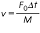

Aim
To observe the response of a single degree of freedom (SDOF) system subjected to excition.
A. Background:
This is experiment is about response of a single degree of freedom (SDOF) system subjected to excition which is non-periodic (aperiodic) but deterministic with respect to time. The type of excitation seen in Experiment No. 2 is periodic and moreover, harmonic or sinusoidal. Such type of excitation has a fixed amplitude and a particular frequency. Mathematically, its value, as a function of time, t, is expressed by the expression f(t)=F0 sin(wt), where, F0 is the amplitude and w is the frequency of the force excitation. In case of support excitation (Experiment No 3 ), it is . Such kind of excitation is observed in case of machine running at constant speed and having a rotating unbalance.
However, many times, the excitation is non-periodic or aperiodic, and, of course, non-sinusoidal. It may be applied suddenly and for a very short time but having a large value or it may have a moderate value but applied suddenly and for a finite period of time. Or, It may be applied for a short duration but with gradual increase in its value, starting with zero; And there are many more such possibilities. The excitation can be a force excitation or a support excitation having variation with respect to time as stated above. The force (or motion of the support) may vary continuously though it is aperiodic but following some relationship with time (i.e. it is deterministic in nature) and is called an arbitrary forcing function. The study of response of a single degree of freedom system (SDOF System) to such a force or support excitation is the basis of this experiment.
An impulse is a large force, F0, acting for a very short interval of time, Δt. It is measured by the product F0*Δt = I. Response of SDOF system to an impulse is obtained easily. It follows the principle of conservation of momentum and response of SDOF system to initial velocity. If the mass of the system is initially at rest, its momentum, immediately after the application of impulsive force, is obtained from I = Mv-Mu. Where M is the mass, u is initial velocity, v is velocity immediately after the application of the impulse, and I is the impulse, I = F0*Δt. If initial velocity u is zero (i.e. if the mass is at rest, initially), the velocity of the mass, immediately after application of impulse, is obtained as

This can be considered as the initial velocity given to the system and the response of the system is written as

If damping is very small, and hence neglected, we write and get the response of undamped SDOF system to impulse as

The symbols carry their usual meanings as explained in earlier experiments and also given on the next page.
Consider a SDOF system falling from a height 'h' on the ground with support touching the ground first. The motion of the mass can also be considered to be with initial velocity but a sudden and continuous force equal to weight of the mass acting on it after the hit.
The response is given by
The first term in the above expression is due to initial velocity V0 given by V0 =(2gh)0.5, where h is the height through which the system falls down and the support hits the ground.
The second term is due to the fact that the weight of the mass, Mg, starts acting on the mass suddenly and continuously after the support hits the ground.
In case of an undamped system with ζ =0, the above expression reduces to
M = Mass of system idealised as rigid lump mass,
K = Stiffness of spring; the spring represents the resilient material or component present in actual, real-life system, like a cork sheet,
rubber support, etc.
C = Damping coefficient of damping material present in the system; the resilient materials themselves mentioned above provide the
damping
ωn = Undamped natural frequency = (K/M)0.5
Cc = Critical damping coefficient =2(KM)0.5
ζ = damping coefficient factor = C/Cc ; whose value is considered to be less than 1 as the system is under-damped
ωd = Damped natural frequency = (1-ζ 2) ωn
B. About The Experiment:
The experiment considers motion of body of a car after falling into a ditch of depth ‘h’ or after passing over a hump of a selected shape. The car-body is modelled as a single rigid lumped mass supported over the axle through the suspension (shock absorber). The suspension is represented by the spring and the viscous damper. The motion of the body of the car is obtained using expression given earlier and shown in the simulator. The motion is also shown graphically as a function of time. There is facility to select the values of different parameters and dimensions of either the ditch or hump. This is an example of support excitation of SDOF which is aperiodic but deterministic. By aperiodic, we mean, not repeating after a fixed interval of time, and by deterministic, we mean its value can be obtained exactly for any given value of time.The animation of car showing same concept is given below;


Aim : To observe the response of a single degree of freedom (SDOF) system subjected to excition.
Please read ‘Background’ related to this experiment. This section explains the procedure related to the experiment.
This experiment models a car as a single degree of freedom system passing over a hump of given shape or falling into a ditch (or from a step) of depth h.
You must provide the values of system parameters such as masse of body of the car, M, stiffness of the suspension, K, and coefficient of damping of the suspension, C, and velocity of the car. Also, you need to choose the dimensions and the shape of the hump or the depth of ditch (or step). To view the response of the car, run the simulator and observe the motion of car and plot of displacement of the car versus time after the car passes over hump or the step.
Follow the steps given below:
- On clicking the tab ‘Simulator’, you will be directed to another screen displaying a hyperlink “Click here to open the Simulator”. Click on the hyperlink to open the Simulator.
- There are two smaller screens and smaller windows provided to input the values of different parameters. Also given are some notes and massages; read them. Out of the two smaller screens, the one on the left is for viewing the animation of motion of the car – a small clip of motion of an animated car can be viewed in this window. The screen on the right will show a plot of displacement of the car body versus time after the car has passed over the hump or fallen from the step ( or into a ditch).
- Input the values of parameters in the smaller windows. See the suggested ranges that appear in the windows and choose any value that lie within the range suggested.
- Click on ‘Calculate’ to get the values of undamped natural frequency, ωn , critical damping coefficient Cc, and the damping factor, ζ. Ensure that the value of ζ is less than 1 - The system is under-damped.
- Click on the button ‘Run’. The animation on the left screen will begin. The first part exhibits the process of system-modelling wherein we move from a real-life situation to a physical model. In this animation, you will see a car being transformed into a physical model. Near the end of animation, the wheel is seen to fall from a step (or pass over a hump). The shape and size of the hump/step was already selected before starting the simulation.
- As soon as the animation is complete, you would see the graph of displacement of the mass, x(t), (representing the body of the car) versus time, t, as the response to excitation provided by hump/step.
- Study the graph and observe the maximum values of displacement and time taken to die out the oscillations to a sufficiently low value.
- Repeat the experiment trying different set of values of parameters and compare the motion and graphs obtained every time.
- Provide feedback on your experiment informing us what your liked and the aspect of experiment needing improvement.

1.
Arbitrary excitations are those which are:
a. periodic and harmonic
b. aperiodic but known functions of time
c. aperiodic but non-deterministic
d. non-linear
2.
Response of SDOF systems to arbitrary excitations are studied fundamentally by studying the response of the system to
a. a unit impulse
b. a step excitation
c. harmonic forcing function
d. none of the above
3.
The oscillation of the mass in a damped SDOF system subject to an impulse excitation die out after a period of time because
a. the excitation is an impulse
b. the system is damped
c. it is a single degree of freedom system
d. the oscillation will not die out in case of the impulse excitation
4.
If the damping factor is smaller, response of a SDOF system subject to an impulse will be
a. considerable for a longer interval of time
b. negligible after a short interval of time
c. continue for ever
d. can not be predicted
5.
After falling from a height, the oscillations of an electronic equipment packed in a box and surrounded by some resilient material can be modeled as
a. response of a SDOF system subjected to an impulsive force
b. response of a SDOF system whose support is subject to an initial velocity and a step excitation force given to the mass
c. response of a SDOF system subjected to a step input alone
d. a ramp excitation given to the mass